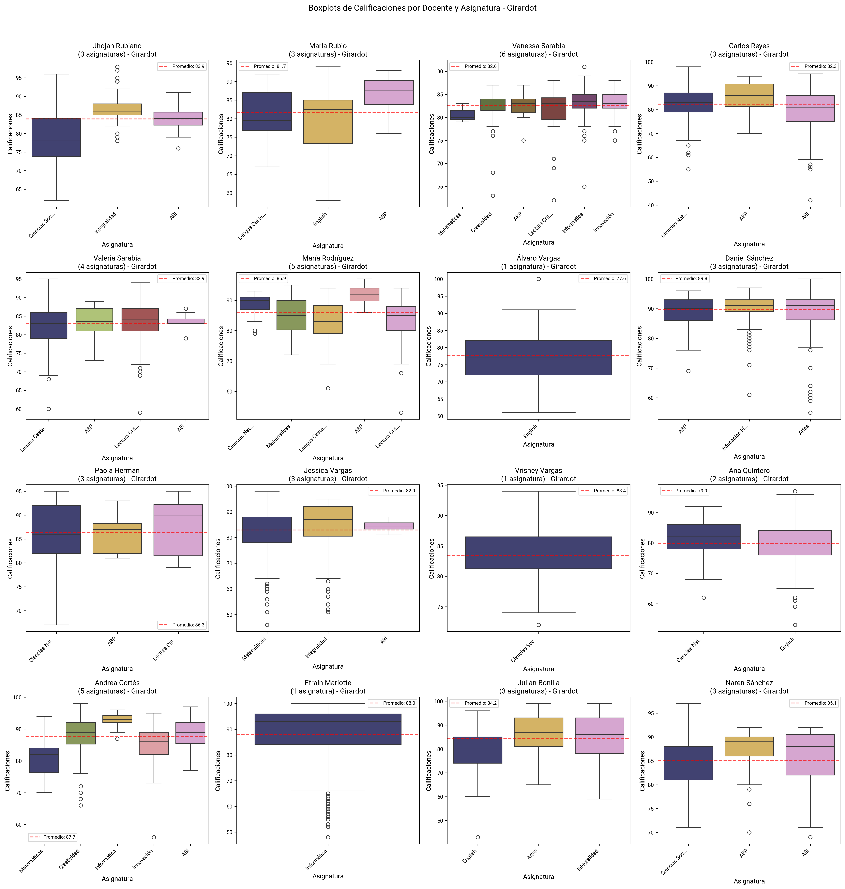

Análisis de Comportamiento Docente - Sede Girardot#
Resumen#
Este análisis explora los patrones de calificación y comportamiento pedagógico de los docentes en la sede de Girardot, evaluando la consistencia, distribución de calificaciones y patrones de evaluación.
Sede: Girardot
Total docentes analizados: 16
Análisis incluye: Patrones de calificación, distribución por asignatura, análisis por grado, métricas de Moodle
1. Análisis General de Patrones de Calificación#
Evaluación integral de los patrones de calificación de todos los docentes de la sede, identificando consistencias y variabilidades en la evaluación.
Interpretación#
Promedio de Calificaciones por Docente: Distribución de promedios de calificaciones asignadas por cada docente
Porcentaje de Notas Altas (≥80): Proporción de calificaciones altas otorgadas por cada docente
Nota Máxima por Docente: Calificación más alta registrada por cada docente
Nota Mínima por Docente: Calificación más baja registrada por cada docente
Mediana de Calificaciones: Valor central de las calificaciones por docente
Porcentaje de Notas Bajas (<60): Proporción de calificaciones bajas por docente
Desviación Estándar: Variabilidad en las calificaciones de cada docente
Distribución de Promedios: Histograma general de promedios docentes
Métricas de Moodle: Actividad docente en la plataforma virtual
Conclusiones#
El promedio general de calificaciones se mantiene por encima del umbral de 75, mostrando rendimientos adecuados y consistentes.
El porcentaje de notas altas es elevado en la mayoría de los docentes, lo que sugiere buen desempeño estudiantil general.
Las notas máximas se mantienen cercanas a 100 en casi todos los casos (excepto por 3 docentes), evidenciando que los estudiantes alcanzan los niveles más altos de logro.
Las notas mínimas varían más, con algunos docentes mostrando valores bajos (6 docentes no registran calificaciones bajas)
La mediana de calificaciones confirma que la mayoría de los docentes están en o por encima del promedio general.
El porcentaje de notas bajas (<60) es muy bajo en casi todos los casos, lo que indica pocos estudiantes con dificultades severas.
Las desviaciones estándar se mantienen bien por debajo del umbral (15), señal de consistencia en las evaluaciones.
Se observan grandes diferencias en el uso de Moodle.
2. Distribución General por Asignatura#

Análisis de la distribución de calificaciones agrupadas por asignatura, mostrando las diferencias en los patrones de evaluación entre materias.
Interpretación#
Distribución por Asignatura: Boxplots comparativos de calificaciones por materia
Línea de Promedio General: Referencia del promedio general de todas las calificaciones
Variabilidad entre Asignaturas: Diferencias en la dispersión de calificaciones por materia
Conclusiones#
La mayoría de las asignaturas tienen sus medianas en o por encima del promedio general, mostrando buen desempeño académico global.
La mayoría de las materias presentan algunos valores atípicos bajos, aunque sin afectar de manera significativa las tendencias generales.
Las asignaturas con mayor dispersión y presencia de notas bajas son Matemáticas, Lengua Castellana, Ciencias Naturales, Ciencias Sociales e Inglés.
3. Análisis por Docente y Asignatura#

Evaluación detallada de los patrones de calificación de cada docente por asignatura.
Interpretación#
Boxplots Individuales: Cada subplot muestra la distribución de calificaciones de un docente por asignatura
Promedio del Docente: Línea de referencia del promedio general de cada docente
Variabilidad por Asignatura: Diferentes patrones de calificación según la materia
Conclusiones#
En la mayoría de los casos, las cajas son compactas, lo que indica consistencia en las calificaciones dentro de cada asignatura.
Se observan algunos valores atípicos bajos, pero no son generalizados.
4. Análisis por Docente y Grado#

Análisis de los patrones de calificación de cada docente según el grado académico.
Interpretación#
Distribución por Grado: Boxplots mostrando calificaciones de cada docente por grado
Adaptación Pedagógica: Diferentes enfoques de evaluación según el nivel académico
Consistencia por Grado: Uniformidad en las calificaciones dentro de cada grado
Conclusiones#
Se observa una variabilidad moderada entre grados, indicando ligeras diferencias en el desempeño según el grupo.
Existen pocos valores atípicos bajos, lo que sugiere que el rendimiento general es estable y sin casos extremos generalizados.
5. Análisis Detallado Docente-Asignatura-Grado#

Análisis granular de las combinaciones específicas docente-asignatura-grado, proporcionando la vista más detallada de los patrones de evaluación.
Interpretación#
Combinaciones Específicas: Cada subplot representa una combinación única de docente, asignatura y grado
Patrones Granulares: Identificación de patrones muy específicos de calificación
Variabilidad Detallada: Análisis de la dispersión en contextos muy específicos
Conclusiones#
Hay pocos casos de notas muy bajas, lo que sugiere un nivel académico alto sostenido.
Se nota una menor dispersión en los grados superiores y mayor variabilidad en los grados más bajos.
En general, los outliers son escasos y no afectan de forma significativa las tendencias.